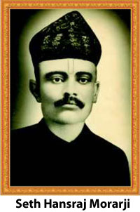
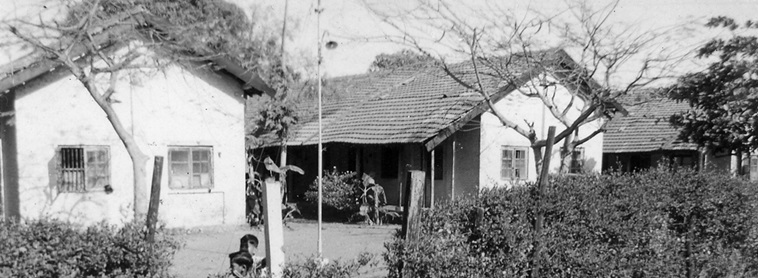
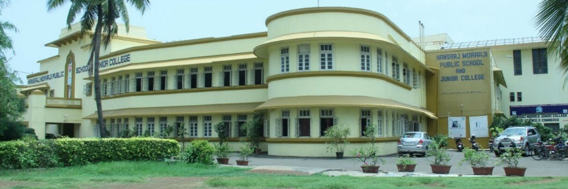

ABOUT THE SCHOOL

The Hansraj Morarji Public School established in the year 1939 is located in Andheri (West), a suburb of Mumbai. The idyllic beauty of the premises provides an ideal location for education in this concrete jungle of Mumbai.
The pollution free verdant campus is an oasis in this notoriously polluted metropolis. The place is a marvel in Mumbai and is to be seen to be believed. The HMP School is a member of Indian Public School Conference (IPSC), believes in creating mature & knowledgeable individual who are our asset to the society. Discipline, personality development with a respect for Indian traditional values & culture are important aspect which are developed and nurtured at the HMP School. For us a child is not just a student, but he is part of a movement that strives to create a world which believes in a wholesome combination of tradition and modernity.
History
|  | |
1939the school was founded by Seth Hansraj Morarji |
|
1963the school becomes english medium |
|
2010School becomes co-ed after 71 years of its existence |
|
2013School wins British council award |
|
|  | |
school crest
The emblem signifies the power of knowledge. The two ‘Rajhans’ are the epitome of purity, dignity and class. The water stands for purity, clarity, depth and continuity. The “Rajhans” upholding the Lotus flower depicts the power of knowledge which grows so beautifully in the pond of Hansraj Morarji Public School and its fragrance engulf each and every child who comes to this Institute. Together they empower students with the power of knowledge. Therefore the school motto is “Ghyanmev Shakti” meaning “Knowledge is power”.
aims & objectives
- To create and provide an environment suffused / surcharged with the public school spirit, congenial and conducive to setting its boys on course to a full flowering of their personalities through an exposure to the Public School way of life.
- To inculcate an abiding sense of values and a spirit of fearless thinking and expression.
rules & regulations
The school expects all its pupils and their parents / guardians to be thoroughly conversant with its rules which the pupils will follow as much in its spirit as in its letter.
- All students must remain present on the reopening day of the school after the Summer and Diwali Vacations.
- All pupils must wear the prescribed uniform and footwear, failing which pupil will be sent back home unless there is a genuine excuse note from parent/ guardian concerned.
- The pupils must be in their class before the first bell. Their punctuality, regularity of attendance shall be considered at the time of giving marks for internal years work.
- The pupils should not leave their class-room without the prior permission of the teacher. They should maintain silence and discipline in between two consecutive periods.
- No pupil will absent himself from the school without parent's request in writing and the Principal's knowledge and sanction.
- For genuine absence of any period a written note must be sent to the school along with the student at the time of resuming the school. In any case absence of more than three days without permission / intimation may lead to striking the name off the rolls.
- A student is supposed to present a medical certificate if he is absent on account of any type of illness. A fitness certificate must also be produced at the time of resuming after the sickness along with a covering note.
- Bunking / Cutting classes or leaving the school premises during the school hours is a serious offence.
- Irregular attendance, habitual laziness, persistent disobedience, flouting or flagrant violation of the school rules and conduct in or out of the school, which is injurious to the moral tone of the school is in itself sufficient reason for expulsion from school.
- All students must maintain their homework, class work books and update them (regularly) and bring them regularly to the school.
- All pupils must bring the school hand book (Calender) on all working days and use it in ways it is meant to be used.
- No other books except the approved or sanctioned text books will be brought to the school. They should not bring any other material like guides, coaching class books, magazines, periodicals to the school.
FROM THE PRINCIPAL'S DESK
In last years edition of the Director’s message, he stated that ‘the winds of change are blowing in the right direction at Hansraj Morarji Public School’. As I took over as Principal, I set out with the theme ‘I Have a Dream’.
DIRECTOR'S MESSAGE
I am happy to experience these winds blowing even more strongly towards realizing my dream. The dream is pushing us to reality and our final destiny, which is to mould HMPS into an institution ‘par excellence’.